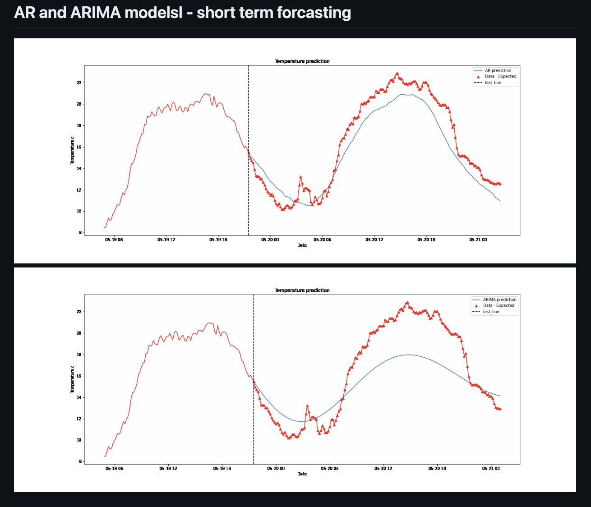

Weather & Temperatute Prediction - Deep Learning
- Tech Stack: TensorFlow, PyTorch, Scikit-Learn, Numpy, Pandas, Keras, Deep Learning
- Github URL: Project Link
The goal of this repository is to develop a model for temperature prediction using both classical and modern tools. The classical models including Auto Regression (AR) and Auto Regression Integrated Moving Average (ARIMA) are common for time series modeling. The Long Short Term Memory (LSTM) is a modern tool to deal with time-series data.
The data is available from the Keras website Example in the time series section here and users can easily download it through url connection specified in the code P01_01_Data part of this repository.
In the EDA part, the data is analyzed to answer the question of whether the temperature data set is stationary or not. This is important from classical modeling (AR and ARIMA) point of view.
Using the LSTM model, the user would be able to analyze the temperature time series data for any number of timestamps in the future while still considering the lags information. Also, the LSTM model or any ML algorithm is able to consider more than one-time series data at the same time for analysis, unlike the classical methods (mostly univariate approach).
